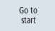

You can search for specific events in the log.
Precondition
The relevant log file is open.
Procedure
 | 1. | Press the "Search" softkey. A new vertical softkey bar appears. The "Search" window opens at the same time. |
| | 2. | Enter the desired search term in the "Text" field. |
 | 3. | Position the cursor in the "Direction" field and choose the search direction (forward, backward) with the <SELECT> key. |
 | 4. | Press the "OK" softkey to start the search. If the text you are searching for is found, the corresponding line is highlighted. |
 | | Press the "Continue search" softkey to continue the search, as necessary. |
| | | - OR - |
| | | Press the "Cancel" softkey when you want to cancel the search. |
Additional search option
| | 1. | Press the "Go to End" softkey to scroll to the end of a large log. You get to the oldest entry of the recording. |
|  | 2. | Press the "Go to Beginning" software to return quickly to the most recent log entry. |